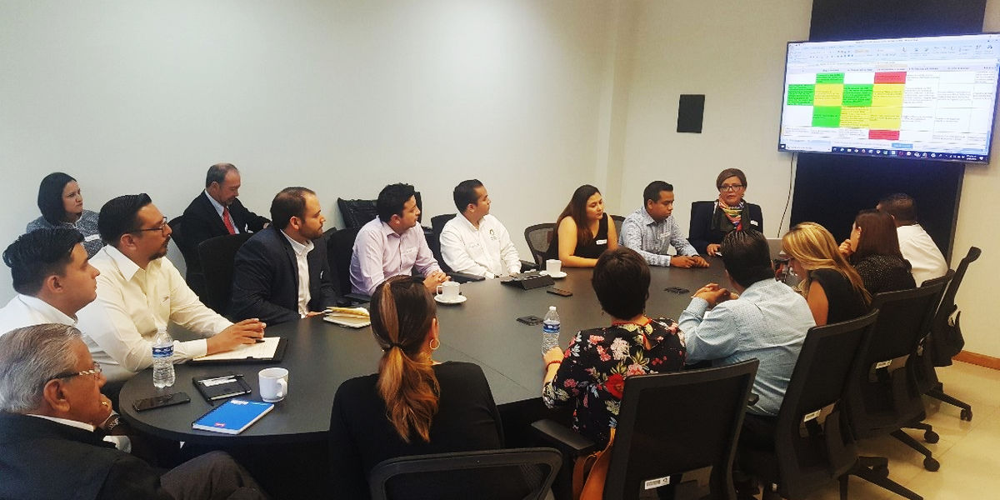
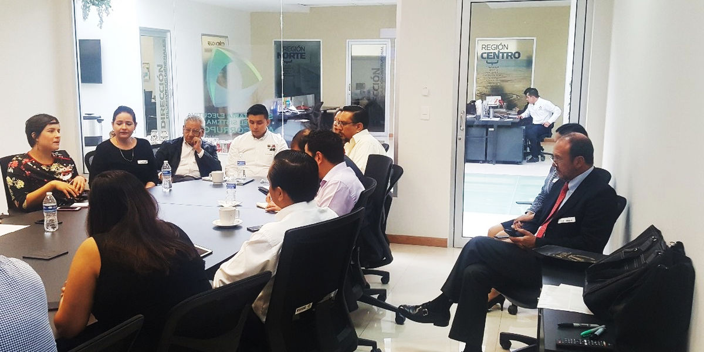
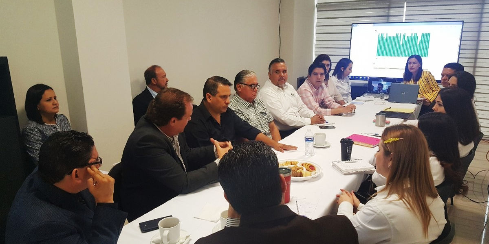
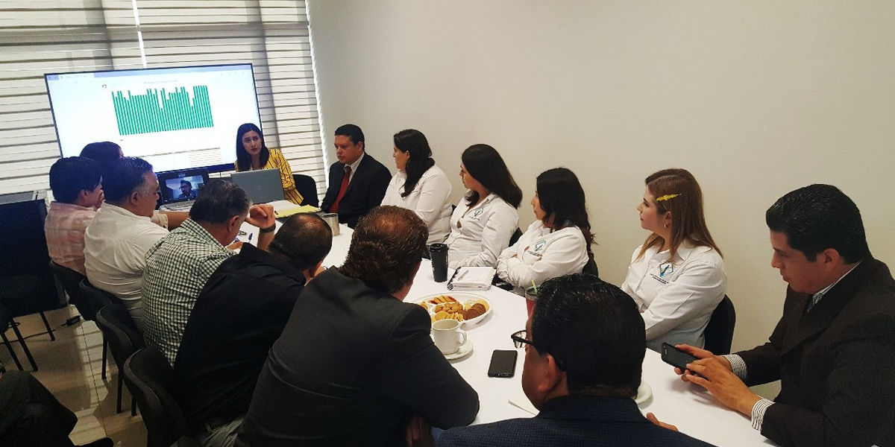

El Mtro. José Octavio se reunió con los integrantes de los dos equipos operativos que participan en el Reto 100 días Anticorrupción, el cual tiene como objetivo mejorar la respuesta del Sistema Anticorrupción del Estado de Coahuila a la resolución de los casos penales y de faltas administrativas graves por actos de corrupción, cuidando el debido proceso.
En dichas reuniones se plantearon los avances que se tienen a la fecha, además se detallaron las dificultades que se han presentado durante el proceso, las cuales serán mitigadas con acciones específicas para lograr el desempeño deseado, recalcando que esto implica disciplina, compromiso y el involucramiento del personal directivo y operativo de cada una de las instituciones que participan.
Instituciones involucradas:
- Fiscalía Especializada en Delitos por Hechos de Corrupción
- Tribunal de Justicia Administrativa
- Consejo de la Judicatura del Poder Judicial del Estado
- Auditoría Superior del Estado de Coahuila
- Instituto Coahuilense de Acceso a la Información Pública
- Secretaría de Fiscalización y Rendición de Cuentas
- Secretaría Ejecutiva del Sistema Estatal Anticorrupción
Con el propósito de trabajar de forma colaborativa sociedad y gobierno participan también en el Reto:
- Consejo Cívico de Instituciones Coahuila
- Consejo Cívico de Instituciones Región Laguna
- Participación Ciudadana 29
- CANACINTRA
- CANACO
- COPARMEX
- Universidad Autónoma de Coahuila
- Universidad Carolina
De esta manera el Consejo de Participación Ciudadana cumple con algunas de sus atribuciones entre las que destacan:
- Proponer al Comité Coordinador del Sistema proyectos de bases de coordinación interinstitucional e intergubernamental en las materias de fiscalización y control de recursos públicos, de prevención, control y disuasión de faltas administrativas y hechos de corrupción, en especial sobre las causas que los generan.
- Proponer al CC del SEA proyectos de mejora a los instrumentos, lineamientos y mecanismos para el suministro, intercambio, sistematización y actualización de la información que generen las instituciones competentes de los diversos órdenes de gobierno en las materias reguladas por esta ley.
Mismas que se especifican en el Artículo 21 de la Ley del Sistema Anticorrupción del Estado de Coahuila de Zaragoza.



